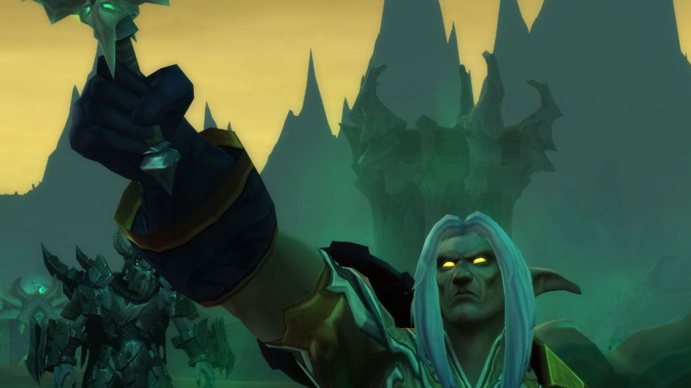

News › Correctifs du 9 novembre
Correctifs du 9 novembre : Cité engloutie, classes et quêtes
10 novembre 2026
Nouvelle grosse série de correctifs : la Cité engloutie devient moins punitive, plusieurs classes sont corrigées, des donjons lâchent enfin leur butin et les zones les plus bondées se vident un peu.

Donjons
- La Cité engloutie : les monstres faisaient environ 30 % de dégâts en trop, c'est corrigé. Dans la rencontre Deathless Marrow, les créatures ont 25 % de vie en moins et frappent moins fort.
- Prison d'Alcaz : Zarla Ober lâche enfin du butin.
- Terrasse du Façonneur : Vitrix, Snowtalon et Cinder (noms anglais) donnent du butin de haut niveau et des matériaux de dépeçage.
- Profondeurs de Rochenoire : les portes de la salle du trône s'ouvrent même après un wipe sur l'empereur Thaurissan.
- Stratholme : on ne peut plus y monter sur sa monture.
- Rappel : depuis le 8 novembre, l'XP des monstres de donjon est augmentée de 50 %.
Classes
- Mage : Choc de flammes n'utilise plus Idées claires à chaque tick au sol, et les chances de Concentration des arcanes sont réparties entre le sort et ses projectiles.
- Chaman : la Surcharge fait bien les dégâts prévus pour Éclair.
- Démoniste : la quête du Palefroi corrompu donne bien la compétence de monte (sinon, invoque le palefroi une fois pour la recevoir). Incinérer est réservé à la Destruction.
- Prêtre : Infusion de puissance reste bien sur les alliés, et la Forme d'ombre ne saute plus avec Gardien de la peur.
- Druide, Paladin, Chasseur, Guerrier : petites corrections (Charge farouche, Consécration, familiers, gestionnaire de temps de recharge).
Ce sont des corrections de bugs : nos arbres de talents et nos builds ne changent pas. L'équilibrage annoncé arrive avec la maintenance du 11 novembre.
Objets et quêtes
- La Bourse de poussière pourpre (Twitch) donne bien l'heure de bonus de campement en plus.
- Les caisses de contrebande et les commandes d'artisan tombent à nouveau en donjon.
- Une quinzaine de quêtes débloquées : objets partagés en groupe, PNJ qui ne fuyaient plus, journaux introuvables…
Monde
Blizzard réduit le nombre de joueurs dans plusieurs zones très chargées, encore plus sur l'ensemble de règles JcJ, après les retours des joueurs.
Source : JudgeHype, d'après les notes de correctifs de Blizzard du 9 novembre 2026.